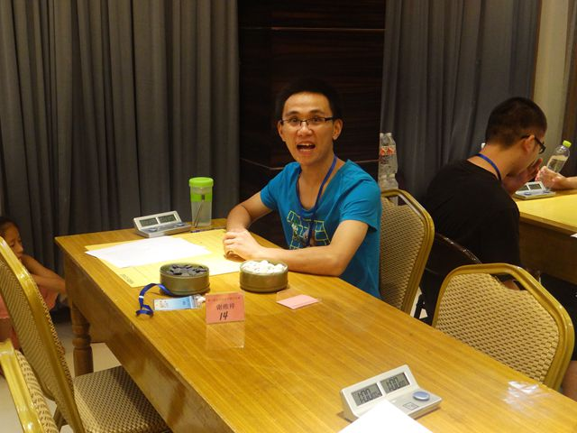
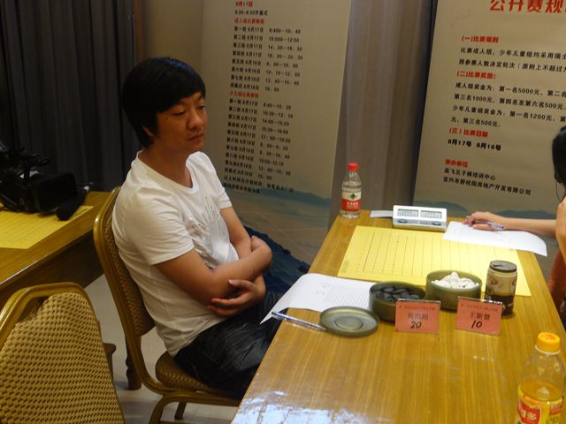
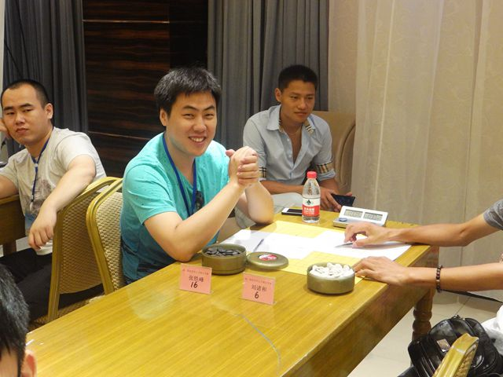
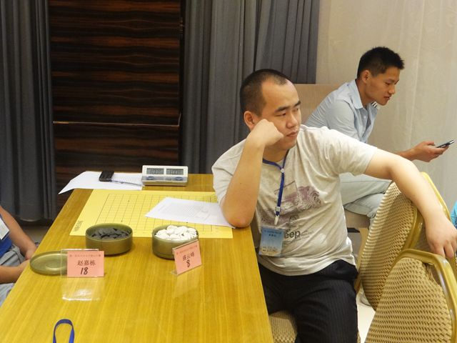
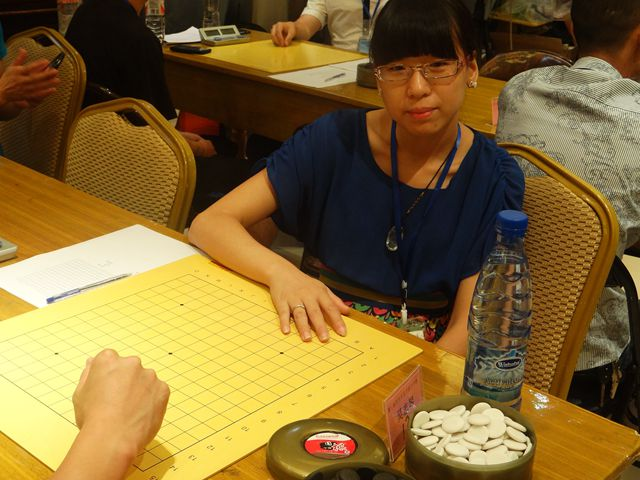
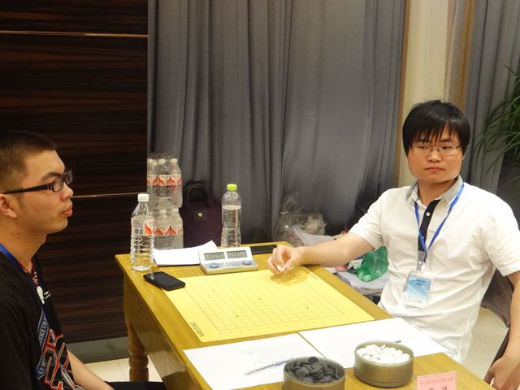
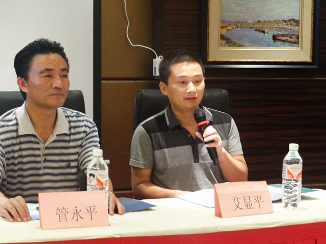
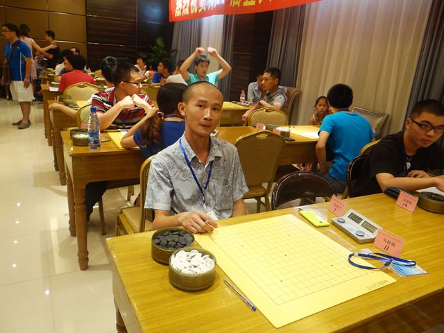

宜兴赛赛场掠影――黄药师摄影
首页
江苏五子棋
#1 宜兴赛赛场掠影――黄药师摄影 作者：陈国良 发表时间：2013-8-17 9:55:42








#2 Re:宜兴赛赛场掠影――黄药师摄影 作者：王莱顿 发表时间：2013-8-17 10:28:53
围观小丸~
#3 Re:宜兴赛赛场掠影――黄药师摄影 作者：屏蔽 发表时间：2013-8-17 11:15:54
陈靖的脸更方了
#4 Re:宜兴赛赛场掠影――黄药师摄影 作者：None 发表时间：2013-8-18 8:41:24
艾亚平很瘦啊
#5 Re:宜兴赛赛场掠影――黄药师摄影 作者：黄药师 发表时间：2013-8-18 8:46:43
楼上的意思是说，相比较而言，高飞更丰满些
#6 Re:宜兴赛赛场掠影――黄药师摄影 作者：一期一会 发表时间：2013-8-18 9:38:50
一点进来看到就感觉有点吓人，第一张应该放个美女让视觉缓冲一下……
#7 Re:宜兴赛赛场掠影――黄药师摄影 作者：黄药师 发表时间：2013-8-18 9:47:29
我能说美女都低着头，然后头发都遮住了脸吗
#8 Re:宜兴赛赛场掠影――黄药师摄影 作者：悟石 发表时间：2013-8-18 13:03:32
嗯，棋盘不错